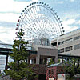

Events
Contents |
SBGN Events
As part of our efforts to develop and establish SBGN, in 2006 we initiated a workshop series to bring together individuals from around the world who are interested in discussing SBGN, its implementation and its evolution.
This page provides access to meeting pages, agendas, notes and other information about upcoming as well as past events.

29 Apr – 2 May 2013
Edinburgh, UK
This workship was dedicated to SBGN and it focused on the current SBGN specifications and SBGN's future development.
18–22 Apr. 2011
New-York, USA
SBGN 6.5 took part of the first HARMONY hackathons, held at the Memorial Sloan Kettering Cancer Center. Some Discussion_on_Issues minutes of the discussions.
05–10 Oct. 2010
Edinburgh, UK
SBGN 6 took place as part of the first COMBINE forum, together with the SBML and SED-ML meeting, held as a satellite of the ICSB.


16–17 Oct. 2008
Rostock, Germany
SBGN 4 was a satellite of the The 6th Conference on Computational Methods in Systems Biology (CMSB).
28 Jan.–2 Feb. 2008
Okinawa, Japan
SBGN 3.5 was part of the super-hackathon on "standards and ontologies for systems biology", held in Okinawa, Japan.
30 Sep. 2007
Long Beach, California, USA
SBGN 3 was held the day before the ICSB 2007 conference in Long Beach, California.
15–17 Mar. 2007
Heidelberg, Germany
This SBGN workshop was a "spec-a-thon" where a smaller group of people worked on hammering out details of rough draft specification for SBGN Level 1.

7 October 2006
Yokohama, Japan
The second SBGN workshop was on the day before ICSB 2006, in Yokohama, Japan, at the Yokohama World Porters building 6F, room 3.
11–12 February 2006
Tokyo, Japan
The first SBGN workshop was held at the AIST Tokyo Waterfront Bio-IT Research Building in Tokyo, Japan.
COMBINE/HARMONY Events
The 'COmputational Modeling in BIology' NEtwork (COMBINE) is an initiative to coordinate the development of the various community standards and formats for computational models, initially in Systems Biology and related fields.